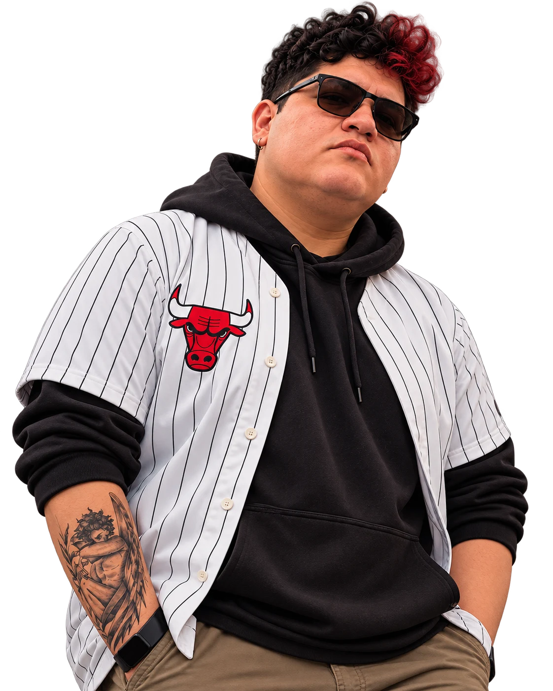

{{ tx.available }}
{{ tx.hello }} Josepf
{{ tx.orSimply }} “Josefo”
{{ tx.role }}
{{ tx.aboutKicker }}
“
{{ tx.ideasA }} {{ tx.ideasB }}
{{ tx.portA }} {{ tx.portB }}.

{{ tx.orSimply }} “Josefo”
{{ tx.role }}
“
{{ tx.portA }} {{ tx.portB }}.
{{ tx.formIntro }}
{{ tx.thanks }} {{ form.name }}. {{ tx.willWrite }} {{ form.email }}.
{{ active.descNb }}
{{ c.body }}
{{ g.client }}{{ g.label }}
{{ g.client }}{{ g.label }}
{{ active.quoteNb }}